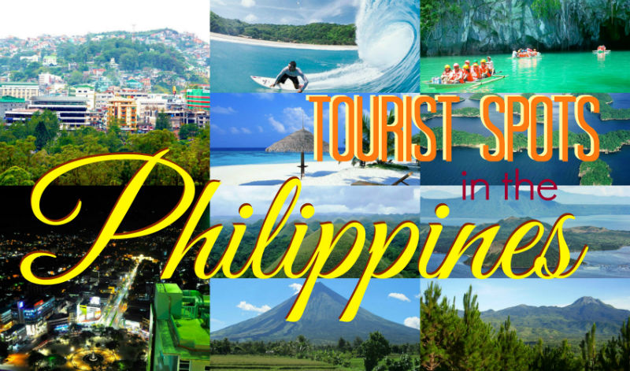

Philippine Tourist Spots
The second-largest archipelagic country in the world after Indonesia, the Philippines has everything you could ever want from a holiday destination. Besides idyllic islands and breathtaking beaches, it has lush rainforests, soaring volcanoes and colorful coral reefs, while its quiet colonial towns and teeming megacities exhibit a wide array of cuisines and cultures.
Set in Southeast Asia, the enormous archipelago consists of around 7,640 islands with only roughly a third of them being inhabited. Surrounded by the shimmering waters of South China, Celebes and Philippine seas, it remarkably boasts the fifth-longest coastline in the world. Dazzling white sands are set alongside gently swaying palm trees and tantalizing turquoise lagoons. Very mountainous and biodiverse, its two largest and most populous islands are those of Luzon and Mindanao.